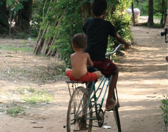
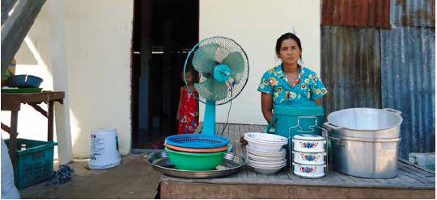
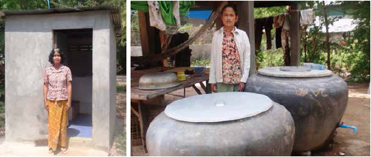
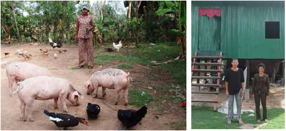
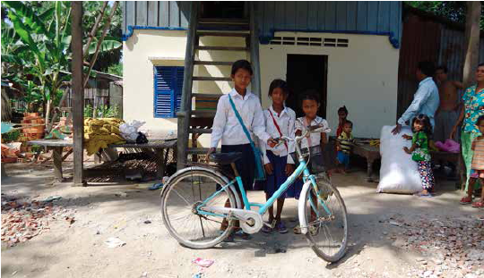

Problems of Poverty
Poverty is partly an attitudinal and psychological state. In Cambodia, the past 40 years of war, genocide and its aftermath have left people feeling disenfranchised from life itself. The lack of security, the loss of family members, and the loss of their original homes over so many years has resulted in a severe poverty that is both physical and psychological.

In addition to their recent past, several cultural and societal issues result in poverty. Cambodians see their children as an assured method of social security. They believe that their children must take care of their parents in their old age, therefore they have many children.
A second issue arising from this is that when a child gets married, the child will receive a portion of the family land. As their children reach a marriageable age, the land a family owns shrinks to a point where the land can no longer support a family unless the land can bear food throughout the year. Currently, one crop a year is the norm.
A third issue which causes poverty is illness within the family. Whenever a family member becomes very ill, the family begins to sell off what they own in order to find and pay for medical treatment. Usually a family sells its animals, then their land and in severe cases they will sell their.
Solutions to the poverty cycle:
In order to break the attitudinal and psychological barriers to development, Tabitha Cambodia focuses on savings. The rationale is that savings is a non threatening way to make choices, a very necessary component for a people who have a very low self esteem; who need to have security and little threat and who must make their own choices without fear from us or others.
All families in Cambodia, no matter how poor have some cash available. They may earn this money by cutting grass to sell to a farmer or collecting discarded plastic bottles and cans. This cash flow is necessary to survive; there is no social security program. Saving a little of this cash flow each week is at the heart of this program.

Dream and Savings Cycles
The “Community Development through Savings Program” helps families to "dream" of a better future. Families are encouraged to save a small amount each week; this money is collected by the local Tabitha staff. At the end of each 10-week “savings cycle”, the savings are returned. The family is then encouraged to purchase their first "dream" – whether it is drinking glasses, clothes for the baby, or a new tarpaulin to keep the rain off. Families continue in the savings programs.
Savings enables families to meet their Basic Needs  Savings enables families to provide for their basic needs. Families are able to eat a balanced and nutritious meal three times day; have items to enable cooking, be able to have bedding and mosquito nets; several sets of clothing per family member, chairs and tables to sit at; etc...
Savings enables families to increase their Sources of Income

Through savings families are able to increase their sources of useable income through the raising of pigs, chickens, ducks; through the development of small businesses; through the growing of vegetables and rice.
Savings enables families to improve their security through the improvement and building of their own homes
Savings enables families to rebuild their homes by purchasing materials and paying for construction labor through the ten week cycles – enabling homes to be rebuilt parts at a time without overwhelming the families with debt.
Savings enables families to achieve transportation and educational opportunities for their children
Through savings families are able to purchase transportation items such as bicycles which allow children to be able to attend school while still be able to help with family chores. Savings enables such items as school uniforms, school supplies and fees to be paid so that children can attend school.
Savings enables a family to celebrate social occasions and
to meet crisis without losing all hope

Savings enables families to celebrate special occasions such as New Years in a socially acceptable way without going broke; families are able to celebrate births and deaths; families are able to practice their faith without undo pressure.
The core measurement Tabitha Cambodia uses to measure
each family’s progress is called Unit of Change
Units of change are visible, concrete changes a family has achieved through savings. These units are measured each month through Tabitha staff, volunteers and by each individual family. It is the measurement of these changes that ensures a family’s progress over the years until graduation.
Family Partnerships and Savings Program:
Tabitha Cambodia Plans for Families in Savings Program – September 2020 until August 2021
Our plans for this program year are to reach out to 17,500 families with 140,000 dependents through Savings Program.
Current families in Savings Program: 14,440 families with 115,520 dependents (as of February 28,2017)
Tabitha has made an impact to 592,760 families with 4,742,080 dependents from 1994 to date
(please click the pictures to see the changes in the lives of Tabitha families)
Planned Units of change from September 2016 through August 2017: 50,127 units of change
Planned Basic Necessities: 2,413 units of Change
Actual Basic Necessities units of change to date: 2,675 units
From 1994 to date: 879,853 units of change
Planned Environment Changes: 936 units of change
Actual Environment units of change to date: 1,236 units
From 1994 to date : 174,597 units of change
Planned Income Generation Changes: 15,512 units of change
Actual Income Generation units of change to date: 82,273 units
From 1994 to date : 560,500 units of change
Planned Housing & Security Changes: 5,389 units of change
Actual Housing & Security units of change to date 1,600 units
From 1994 to date : 194,083 units of change
Planned Education & Transportation Changes: 2,713 units of change
Actual Education &Transportation units of change to date: 1,848 units
From 1994 to date : 201,455 units of change
Planned Health & Social Occasions Changes: 3,481 units of change
Actual Health & Social Occasions units of change to date: 2,252 units
From 1994 to date : 192,889 units of change